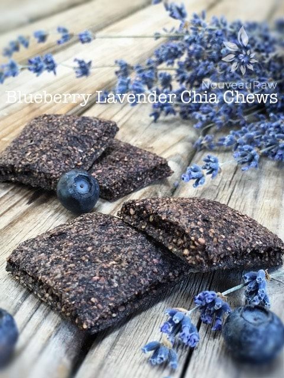

Blueberry Lavender Chia Chews

~ raw, vegan, gluten-free, nut-free ~
I managed to get my hands on some plump, juicy, and organic blueberries and I couldn’t wait to get in the kitchen and start playing around with some new recipes. I love making these chia chews.
My mouth is always in search of different textures, and this one is quite satisfying. Speaking of blueberries and textures… goodness many, many years ago I was working as a checker in a grocery store (I loved checking! odd I know, but that’s another story for another day) anyway, customers kept coming through my line with containers of fresh blueberries.
They were HUGE (the berries not the customers haha)! I made a mental note that for my break I was going to get myself some of them. The break came, and I did that very thing… I couldn’t get to the break room fast enough; I wanted to dive into those blueberries something fierce. As I sat down and kicked my feet up on the chair next to me, I leaned my head back and started popping blueberries into my mouth. They were delicious! When I looked down into the container there, it was… the grand-daddy, the grand-pu-ba of all blueberries.
Forget my mouth-watering; my eyes were watering just taking in the beauty of this massive juicy orb. I picked it up in awe; I had never seen such a large berry. I parted my lips and in it went. Then the oddest thing happened, before my teeth could even cut through the flesh of the berry, I felt a crunch…
A crunch? Yep, my mouth opened quickly so I wouldn’t continue to bite down on it, I pulled the semi-broken berry out of my mouth, I examined it, pulling it apart to see why it was crunchy…. (drum-roll please) inside the blueberry, all curled up in a ball was a bumblebee!! It was dead but a bumblebee? How odd is that?! So for years after, I had a phobia about blueberries, but as you can tell I have shed that phobia and I am back in love.
So that’s my goofy story about blueberries and bumblebees. Now on to the chews! These chews offer up a substantial bite; they aren’t tough, crunchy, or seedy feeling in your mouth. Let’s see, what do they liken to?….(thinking)…Shoot, I can’t think of what they are similar to. All I can say is that it is a fun texture and one that you may not be used to in the raw world of food. So with much excitement, I present to you, Blueberry Lavender Chia Chews!
Oh, one more thing – I wanted to touch on using sweeteners in this recipe and why chose the ones I did. I used maple syrup for its earthy flavor as it balances well with the blueberry and lavender. I then added a small amount of liquid stevia which ramped up the sweetness level without adding flavor. I like having these chews on the sweeter side, but in the end, it is up to you to decide how sweet or not you would like it.
Ingredients:
Yield: 1 1/2 cup
- 3 cups organic blueberries
- 3-4 Tbsp pure maple syrup, to taste
- 1/2 tsp liquid stevia
- 1/2 cup whole chia seeds
- 1/2 cup chia seeds, ground
- 1 Tbsp ground lavender buds
- 1/2 tsp vanilla extract
Preparation:
- In a spice or coffee grinder, grind 1/2 cup chia seeds into a powder and set aside.
- In the blender or food processor, fitted with the “S” blade, combine all of the ingredients except for both measurements of chia. Blend until well combined.
- Add in both chia powder and whole seeds. Combine well. Set aside for 10 mins. This will allow the chia to thicken the puree.
- Pour the mix onto the teflex sheet that comes with the dehydrator. Spread 1/4″ thick. There should be enough batter to make 1 tray worth.
- Dehydrate at 145 degrees (F) for 1 hour, then reduce temp to 115 degrees (F) for about 16 (+/-) hours. Flip the chews over about halfway through, remove the teflex sheet, and continue drying on the mesh sheet.
- I used a ruler and paring knife to cut the chews into small squares.
- Store in an airtight container. This freeze really well.
Culinary Explanations:
- Why do I start the dehydrator at 145 degrees (F)? Click (here) to learn the reason behind this.
- When working with fresh ingredients, it is important to taste test as you build a recipe. Learn why (here).
- Don’t own a dehydrator? Learn how to use your oven (here). I do however truly believe that it is a worthwhile investment. Click (here) to learn what I use.
© AmieSue.com